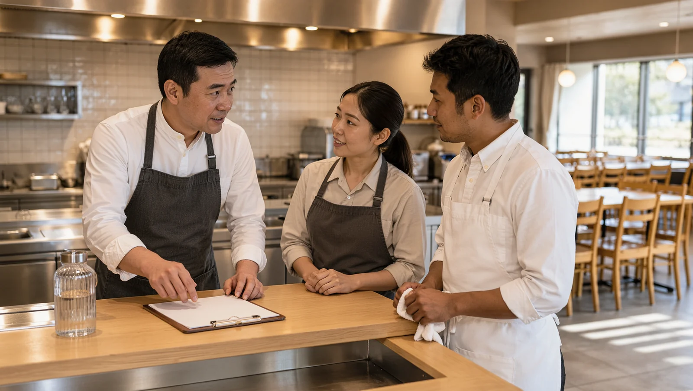

確認する
注文内容を正しく確認するためのやり取り。
接客スタッフの採用をご検討のお店へ
注文を聞く。分からないことを聞き返す。お客様の質問をスタッフに引き継ぐ。接客で大切にしたい会話の場面を思い浮かべながら、候補者の日本語を動画で確認しませんか。気になる点は面接で直接話せます。
登録・人材情報・動画の確認・オンライン面接まで無料。
条件に合う候補者がいる場合にご案内します。


画像はAI生成のイメージです。実在の候補者・導入企業ではありません。
動画で確認日本語の受け答えを知る
面接まで無料見て、話してから判断
LINEで相談まず希望条件を伝える
SELECTくんで、検討の一歩を
インタビュー動画は、話す速さや受け答えの様子を知るための材料です。実際の接客能力を保証するものではありません。面接ではメニューの説明や注文の確認など、自店で起こる場面を具体的に伝えてみてください。どこまで任せるか、何を入社後に教えるかを分けることで、採用前の確認が明確になります。
採用前に、確かめたいこと
注文内容を正しく確認するためのやり取り。
分からない質問を抱え込まず、先輩へ相談する場面。
メニューや接客ルールを教わる際の受け答え。
こんなときの採用相談に
相談から検討まで
自店の接客でよく使うやり取りを整理します。
該当する候補者がいる場合、日本語の受け答えを確認します。
聞き取りづらい時や質問を受けた時の対応を話し合います。
情報・動画・オンライン面接を通じて、企業様ご自身で採用をご判断いただけます。
料金について
採用の検討を始める段階で、
候補者を知るための費用はかかりません。
1人あたり・税別内定後、詳しい人材情報をご提供する際に発生する料金です。
VISA申請・登録支援などの費用は、上記20万円に含まれません。必要な手続きや費用は採用条件に応じて個別にご確認ください。
ご相談の前に
動画は受け答えの様子を知る材料の一つです。実際の接客の対応力まで断定せず、面接で仕事内容や必要な会話を具体的にご確認ください。
経験を希望条件としてお伝えいただけます。条件に合う候補者がいる場合にご案内するため、該当者の紹介を保証するものではありません。
業務内容や在留資格の条件によって確認が必要です。接客以外に任せる仕事も含めて、具体的な担当業務をお知らせください。
外国人採用をご検討の企業様へ
職種・仕事内容、勤務地、必要人数・希望時期をお知らせください。条件に合う候補者がいる場合、人材情報と動画をご案内します。
登録・人材情報・動画の確認・オンライン面接まで無料。
条件に合う候補者がいる場合にご案内します。
友だち追加後、採用の希望条件をご回答ください。
LINE登録だけでお申し込みにはなりません。
人材のご案内や採用・入社時期を保証するものではありません。